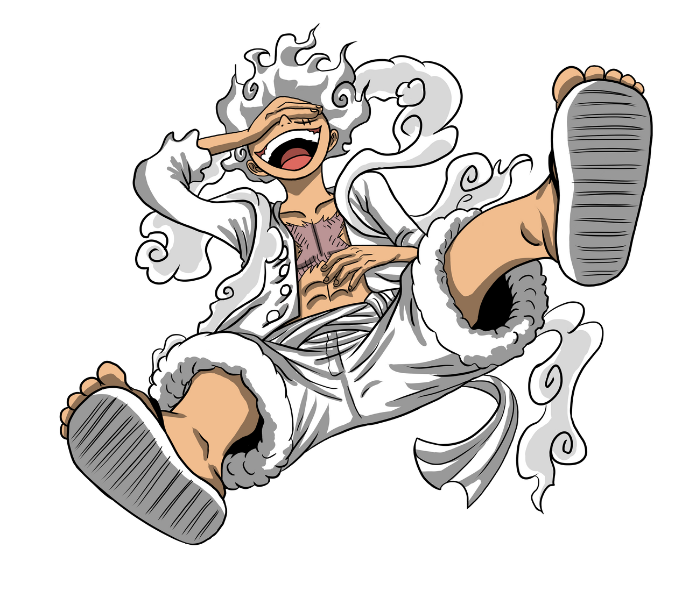
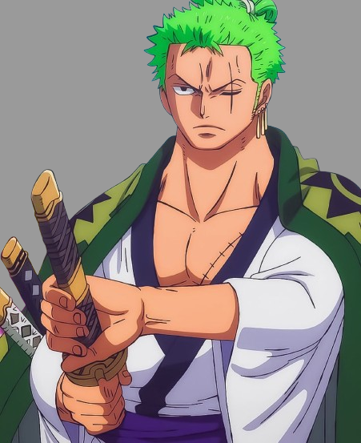
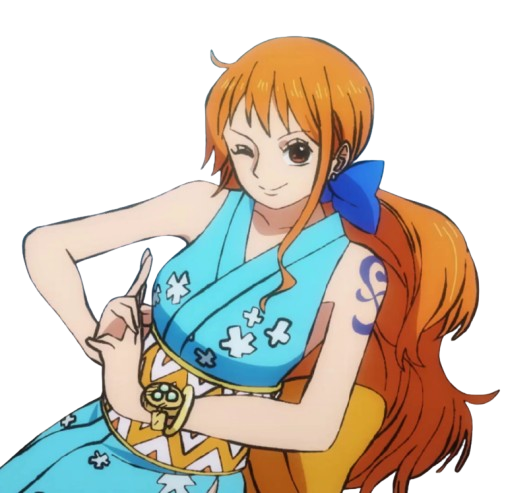
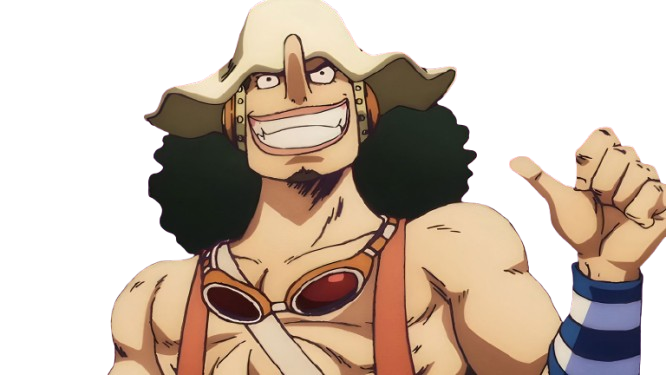
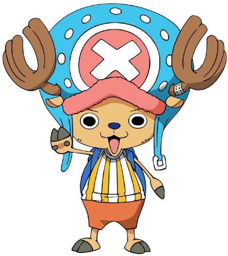
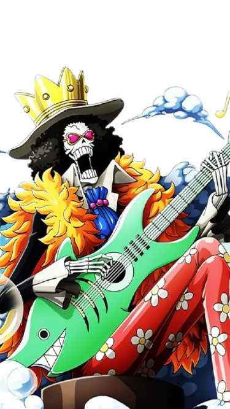
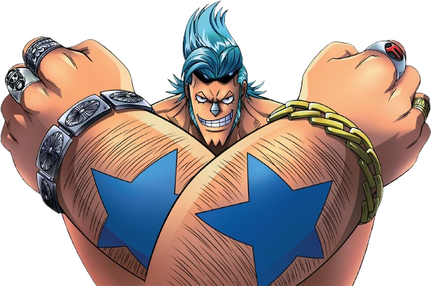
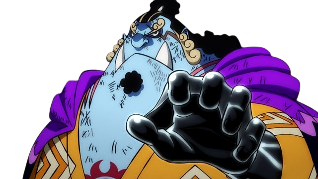
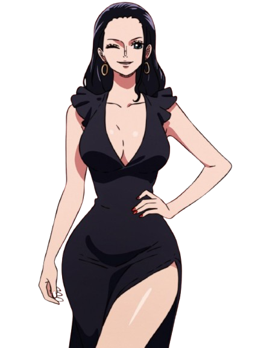

Monkey D. Luffy
The fearless captain of the Straw Hat Pirates, destined to become the Pirate King. Adventure, loyalty, and unbreakable will define his journey.
About Luffy
Fun-Loving
Luffy is cheerful, optimistic, and always brings joy to his crew.
Loyal
He never abandons his friends and will fight for them no matter what.
Determined
Once he sets his goal, nothing can deter him from achieving it.
Pirate Spirit
His adventurous spirit drives him to explore the Grand Line and beyond.
Powers & Abilities
Strength
Incredible physical power, able to overcome the toughest enemies.
Speed
Swift movements allow him to dodge and strike effectively.
Strategy
Creative thinking in battles helps him defeat stronger opponents.
Elasticity
His Gum-Gum abilities give him versatile combat tactics.
Straw Hat Pirates

Roronoa Zoro
Swordsman

Nami
Navigator

Usopp (God Usopp)
Sniper

Vinsmoke Sanji
Cook

Tony Tony Chopper
Doctor

Brook
Musician

Franky (Cutty Flam)
Shipwright

Jinbe
Helmsman

Nico Robin
Archaeologist